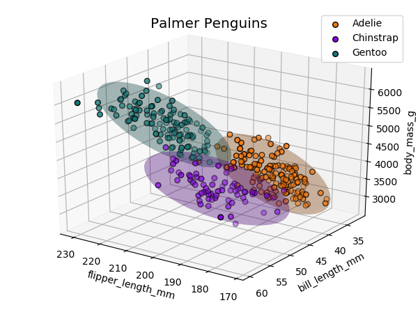

Palmer Penguin Data-set¶
Data is from the PalmerPenguin dataset created by Dr. Kristen Gorman and the Palmer Station, Antarctica LTER. The ellipsoids represent the 90 percentile of the data sets.
import csv
import numpy as np
import matplotlib.pyplot as plt
import s3dlib.surface as s3d
#.. Penguin Data-set
# 1. Define data to examine .........................................
with open('data/palmerpenguins.csv') as csv_file:
csv_reader = csv.reader(csv_file, delimiter=',')
line_count = 0
all_data = []
for row in csv_reader:
line_count += 1
if line_count ==1 :
heading = row
else: all_data.append(row)
heading = heading[2:6]
nptemp = np.array(all_data)[:,2:6].T.astype(float)
pgtype = np.array(all_data)[:,0]
x,y,z = 2,0,3 #.. fields to be plotted
X = np.array( [ nptemp[x], nptemp[y], nptemp[z] ] )
# 2 & 3. Setup surfaces and plot ....................................
rgbC = [ [0.988,0.471,0.031], [0.549,0.000,0.925], [0.063,0.478,0.471] ]
names = [ 'Adelie', 'Chinstrap', 'Gentoo' ]
fig = plt.figure(figsize=(6, 4.5))
ax = plt.axes(projection='3d')
ax.set_xlabel(heading[x])
ax.set_ylabel(heading[y])
ax.set_zlabel(heading[z])
for i in range(3) :
data = X.T[pgtype == names[i]]
colors = [rgbC[i]]
dataT = data.T
# .........................................
surface = s3d.SphericalSurface(3, color=rgbC[i], linewidth=0)
disArr,t = surface.svd(data,.9)
surface.set_surface_alpha(0.2).shade(direction=(0,0,1))
# .........................................
ax.scatter(dataT[0], dataT[1], dataT[2],s=30, c=colors,edgecolor='k', label=names[i])
ax.add_collection3d(surface)
ax.legend()
ax.set_title('Palmer Penguins', fontsize='x-large' )
ax.view_init(elev=25, azim=125)
fig.tight_layout()
plt.show()